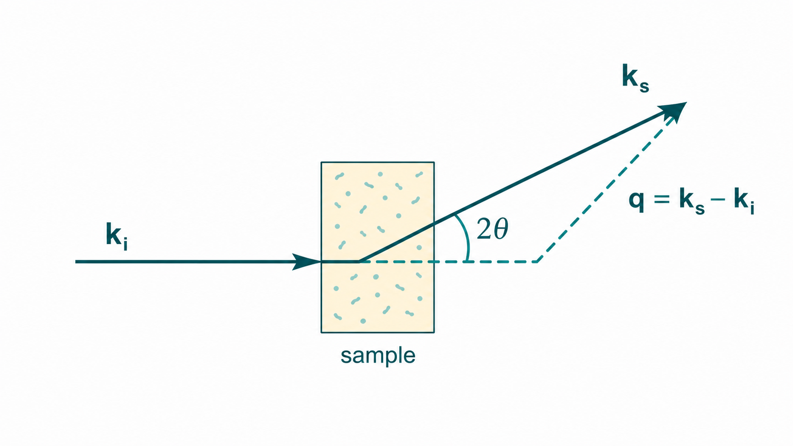
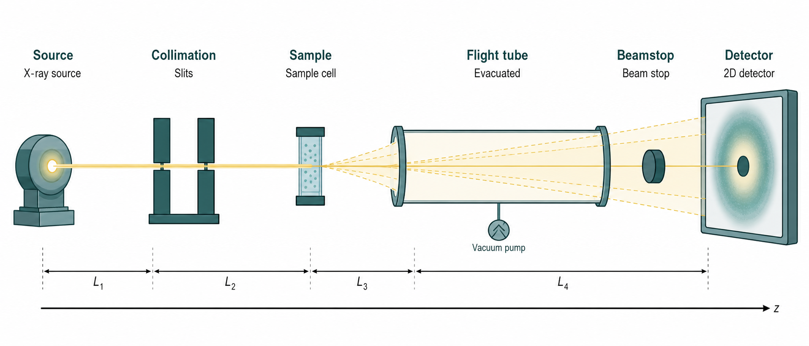

01 · 什么是 SAS
What is small-angle scattering?
导语：一种「看纳米结构统计」的实验
小角散射（small-angle scattering, SAS）泛指在很小的散射角（对应较低的动量转移）测量 X 射线或中子被样品散射后强度分布的一类实验。最常见的两个分支是 SAXS（small-angle X-ray scattering，小角 X 射线散射）与 SANS（small-angle neutron scattering，小角中子散射）。在生物大分子、聚合物、胶体、纳米复合材料乃至金属析出相等领域，SAS 几乎是唯一能在溶液或近原生条件下、对纳米到亚微米尺度的不均匀性做统计表征的通用手段。
与「拍一张实空间照片」不同，SAS 记录的是散射强度 $I$ 随散射矢量 $\mathbf{q}$ 的分布。$\mathbf{q}$ 连接实空间结构与倒易空间信号：大致有 $d \approx 2\pi/q$，其中 $d$ 是所探测的特征长度。因此，SAS 擅长回答「体系里有哪些典型尺寸、它们如何排列、浓度或环境变化时结构如何响应」，而不是给出单个分子的原子分辨率结构。
Jeffries 等人在 2021 年的 SAS Primer 中指出，SAS 能够探测材料内部电子密度或核散射长度密度的纳米级不均匀性，并可在变温、变压、流动、剪切等条件下原位或时间分辨测量——这使它成为连接「化学组成」与「介观组织」的桥梁性工具。
SAS 的适用边界
标准 SAS 分析建立在弹性、相干散射之上：入射与散射光子/中子能量相同，且各散射中心保持固定相位关系。不相干散射（如热运动、自旋翻转）与多重散射通常作为背景或系统误差处理，而非结构信号的主体。Jeffries 亦提醒，XFEL 等极端亮度实验须单独评估非弹性贡献；中子实验中的非弹性/准弹性散射、极化自旋散射与磁性散射属于独立专题，不在本章「经典 $I(q)$」框架内。
样品侧边界同样重要：SAS 敏感的是时间平均、空间平均后的密度关联——快于曝光时间的动力学会被抹平；照射体积内若存在多种互不相关的相，曲线是各相信号的加权叠加，须靠衬度、分馏或模型拆解。
| 问题类型 | SAS 通常能答 | SAS 通常不能单独答 |
|---|---|---|
| 整体尺寸与紧凑度 | $R_g$、$D_{\max}$、$I(0)$ | 侧链原子坐标 |
| 溶液寡聚/复合物 | 分子量趋势、整体形状包络 | 亚基界面氢键网络 |
| 纳米相分布 | 粒径分布、相关长度、比表面积 | 单个颗粒的化学价态 |
| 薄膜面内周期 | 晶格间距（GISAXS 条纹） | 表面原子排布（需实空间探针） |
SAS 探测的尺度：从埃到微米
「小角」并非随意命名，而是由波长 $\lambda$ 与散射角 $2\theta$ 共同决定的$q$ 窗口所对应。真空中常用的定义是
$$ q = \frac{4\pi\sin\theta}{\lambda} $$
其中 $2\theta$ 为入射与散射方向的夹角。当 $\theta$ 很小时，$\sin\theta \approx \theta$，故 $q$ 与 $\theta$ 近似成正比。上式默认真空或空气路径；若样品或飞行管充 He 等低密度气体，有效 $\lambda$ 与几何校正须按实际光路处理（第 04 章）。
典型实验室 SAXS 的 $q$ 范围大约从 $10^{-3}$ Å$^{-1}$ 到 $1$ Å$^{-1}$ 量级，对应实空间尺度约 1 nm–1 μm。USAXS（Bonse–Hart 双晶等）可把 $q_{\min}$ 推至 $10^{-4}$ Å$^{-1}$ 以下，对应 1–2 μm 级结构；同步辐射常在一台仪器上同时覆盖 SAXS 与 WAXS（$q > 5$ nm$^{-1}$），但 WAXS 区对应晶格间距，已超出「小角」惯用分析框架。
波长与 $q$ 窗口： 同一 $2\theta$ 下，$\lambda$ 越短则 $q$ 越大。实验室常用 Cu K$\alpha$（1.54 Å）、Mo K$\alpha$（0.71 Å）、Ag K$\alpha$（0.59 Å）：Mo/Ag 可在相同准直下抬高 $q_{\max}$，但样品吸收亦增强，厚水相样品常仍选 Cu。
算例： Cu K$\alpha$，$\lambda=1.54$ Å，$2\theta=1.0°$ → $\theta=0.5°=0.00873$ rad → $q = 4\pi\times 0.00873/1.54 \approx 0.071$ Å$^{-1}$，$d=2\pi/q \approx 88$ Å。若目标 $R_g=50$ Å 的蛋白，需 $q_{\min} \lesssim 1/R_g = 0.02$ Å$^{-1}$，对应 $2\theta \lesssim 0.28°$——低 $q$ 端对束阻与寄生散射极敏感。
下表给出几个直觉性的对应关系（取 $\lambda = 1.54$ Å，Cu K$\alpha$）：
| 散射角 $2\theta$ | $q$ (Å$^{-1}$) | 特征长度 $d=2\pi/q$ | 可能对应的结构 |
|---|---|---|---|
| 0.1° | 0.007 | ≈ 90 nm | 大胶束、囊泡、相分离域 |
| 1° | 0.07 | ≈ 9 nm | 蛋白质复合物、小角晶畴 |
| 5° | 0.35 | ≈ 1.8 nm | 紧凑球状蛋白、小纳米颗粒 |
需要强调：$d$ 不是「粒径」的简单读数，而是傅里叶空间中敏感尺度的量度。具体能提取的尺寸参数（如回转半径 $R_g$、最大尺寸 $D_{\max}$）取决于样品模型与 $q$ 覆盖范围，这将在后续章节展开。
实验设计算例（延伸）： 若样品含 $R_g \approx 150$ Å 的囊泡，Guinier 要求 $q_{\min} \lesssim 1/R_g \approx 0.007$ Å$^{-1}$。Cu K$\alpha$、$2\theta_{\min}=0.1°$ 时 $q \approx 0.007$ Å$^{-1}$——已踩在仪器极限边缘；须 USAXS 或更长样品–探测器距离 $L$。反之，$5$ nm 金颗粒（$R_g \sim 20$ Å）在 $q_{\min}=0.01$ Å$^{-1}$ 时 Guinier 区宽裕，但若要分辨 $q^{-4}$ Porod 尾，$q_{\max}$ 宜 $\gtrsim 0.3$ Å$^{-1}$。
| 目标结构 | 典型 $R_g$ 或 $d$ | 建议 $q_{\min}$ | 建议 $q_{\max}$（形状/界面） |
|---|---|---|---|
| 球状蛋白 | $R_g$ 15–50 Å | $\lesssim 0.03$ Å$^{-1}$ | $\gtrsim 0.3$ Å$^{-1}$ |
| 胶束 / 小囊泡 | 5–50 nm | $\lesssim 0.005$ Å$^{-1}$ | 视壳层厚度 |
| 相分离域 | 0.1–10 μm | USAXS，$q < 10^{-3}$ Å$^{-1}$ | 低 $q$ 标度律 |
| 致密纳米孔固体 | 孔径 2–50 nm | 视基质散射 | Porod 区，$q R_g \gg 1$ |
在前向散射（极低 $q$）区域，信号对整体尺寸与衬度加权后的「总散射质量」最敏感；高 $q$ 尾则更多反映界面锐利程度与局部细节（与Porod 定律相关，见第 06 章）。
散射几何一瞥
透射 SAS 的典型布局：单色束 → 样品 → 二维探测器记录以直射束为中心的散射环/斑。Svergun & Koch（2003）在溶液散射综述中给出的几何示意概括了入射波矢 $\mathbf{k}_i$、散射波矢 $\mathbf{k}_s$ 与探测器像素—$q$ 的对应关系——后续第 03 章将展开仪器细节，此处只需建立「测到的是角度分布，换算成 $q$」的图像。
对各向同性稀溶液，散射强度在方位角 $\varphi$ 上均匀，环向平均即可得一维 $I(q)$；对取向纤维、剪切流或液晶，2D 图样保留 $I(q,\varphi)$ 信息，环向平均会抹平取向差异。Boldon 等（2015）指出，从原子模型计算理论 $I(q)$ 须对取向做球平均（Debye 公式、球谐展开等）——实验与理论对比时，平均方式必须一致。
照射体积 $V_{\text{beam}} = A_{\text{beam}} \times t$（束斑面积 × 有效厚度）决定参与统计的散射体数目。稀释样品中粒子数 $N = n V_{\text{beam}}$ 须足够大，$I(q)$ 才代表系综平均；过稀则信噪比不足，过浓则 $S(q)$ 介入（第 02 章）。

物理图像：衬度、相干散射与统计平均
弹性相干散射的强度，本质上是样品内散射长度密度起伏的傅里叶变换的模方。Jeffries 2021 将背景扣除后的信号写为过剩密度 $\Delta\rho(\mathbf{r})=\rho(\mathbf{r})-\rho_s$ 的傅里叶变换模方；相位在探测中丢失，故只能读强度。对稀释、各向同性体系，背景扣除后的强度常写为
$$ I(q) = n\,(\Delta\rho)^2 V^2 P(q)\, S(q) $$其中 $n$ 为数密度，$V$ 为单粒子体积，$\Delta\rho$ 为粒子与溶剂的衬度（散射长度密度差），$P(q)$ 为形式因子（单粒子形状与尺寸），$S(q)$ 为结构因子（粒子间关联）。稀溶液中常近似 $S(q)\approx 1$，此时曲线几乎只反映 $P(q)$。
直觉： 可把每个散射中心视为向外辐射的球面波；$\mathbf{q}$ 固定时，波程差由散射体内部距离决定，相干叠加产生干涉条纹。$P(q)$ 编码「单个物体内部」的距离分布；$S(q)$ 编码「物体与物体之间」的距离分布。晶体学中的 structure factor 指倒易格点上的衍射振幅——与 SAS 的 $S(q)$ 同名不同物，读文献时须看上下文。
实验上测到的是大量散射体的统计平均（球对称样品为方位角平均后的 $I(q)$）。这意味着：
- 优势：无需单晶，溶液、粉末、薄膜均可；对无序或部分有序体系天然适用。
- 代价：丢失方位信息（除非有取向）；多组分重叠时须结合模型、对比度变化或分离手段（如 SEC-SAXS）拆解。
Boldon 等（2015）在综述中强调，SAS 的球平均使空间信息降维到一维 $I(q)$（或二维探测器上的 $I(q,\varphi)$），因而属于低分辨技术——但这正是其能处理柔性大分子、多构象系综和复杂软物质的关键。
衬度算例（SAXS）：球状蛋白电子密度 $\rho_p \approx 0.43$ e/Å$^3$，水 $\rho_w \approx 0.33$ e/Å$^3$，$\Delta\rho \approx 0.10$ e/Å$^3$。若缓冲盐使溶剂密度升至 $0.40$ e/Å$^3$，则 $\Delta\rho$ 减半 → 强度降为 $1/4$。SANS 中 $^1$H 与 $^2$H 散射长度符号相反，$100\%$ D$_2$O 匹配可使 $\Delta\rho \to 0$，信号「消失」——这是设计实验而非仪器故障。
衬度算例（SANS）： Jeffries 指出中子散射长度不随原子序数单调变化：金 $b_{\text{Au}} \approx 0.76\times 10^{-12}$ cm 与碳 $b_{\text{C}} \approx 0.67\times 10^{-12}$ cm 接近，而 $^1$H 为 $-0.37\times 10^{-12}$ cm。因此 SAXS 中「重元素亮、轻元素暗」的直觉在 SANS 中常失效——须查表计算 SLD，而非凭 $Z$ 猜测。
与 XRD、显微术及其他方法的互补
初学者常问：「既然有同步辐射，为何不用衍射或电镜？」下表概括方法分工（非绝对排斥，而是典型优势区）：
| 方法 | 典型尺度 | 样品要求 | SAS 的相对位置 |
|---|---|---|---|
| X 射线衍射（XRD） | 晶格间距（Å 级） | 长程有序、常需单晶或粉末 | SAS 看非晶/溶液中的介观不均匀性，不依赖 Bragg 峰 |
| 冷冻电镜（cryo-EM） | 亚 nm–nm（实空间成像） | 薄层、低浓度、制样苛刻 | SAS 可在溶液原位、批量统计；与 EM 结合可约束三维重建 |
| 动态光散射（DLS） | 流体动力学半径 | 稀溶液、粒径分布 | SAS 给出结构因子与形状信息，不仅粒径 |
| NMR | 原子级（局部） | 溶解度、分子量限制 | SAS 对大复合物整体形状更直接，分辨率低 |
XRD vs SAS 决策表：
| 问题类型 | 优先方法 | 原因 |
|---|---|---|
| 原子分辨率晶体结构 | XRD / cryo-EM | Bragg 峰或实空间成像可达 Å 级 |
| 溶液中整体形状、寡聚态 | SAS | 无需结晶；$R_g$、$I(0)$ 直接可读 |
| 纳米析出相尺寸分布（非晶） | SAS | 无长程有序时 XRD 仅见宽峰或漫散射 |
| 晶格常数、相鉴定 | XRD | SAS 对晶格间距不敏感（$q$ 窗口错配） |
| 验证晶体结构在溶液中是否保持 | SAS + XRD 联用 | 比较 $R_g$、$D_{\max}$ 与晶体模型 |
在结构生物学中，SAS 常作为 X 射线晶体学或 cryo-EM 的互补约束：晶体学给出原子模型，SAS 可验证溶液中是否保持同一折叠态、是否发生寡聚化或构象变化。Svergun 等（2003）强调，$R_g$ 与 $I(0)$ 是溶液体系的一级参数，往往先于复杂建模完成；对无法结晶的膜蛋白复合物、内在无序蛋白（IDP）的系综，SAS 往往是少数可行手段之一。
在软物质与硬材料领域，SAS 可追踪相分离、胶束化、剪切诱导取向、温度诱导有序等过程；掠入射变体 GISAXS 则专门用于薄膜与表面纳米结构（见第 03 章与专题手册）。Jeffries 2021 综述还列举：合金析出相（SAS 最早应用之一）、岩石孔隙度、混凝土水化、电池电极微结构等——共同点是纳米尺度不均匀性且常无需长程有序。
SAXS 与 SANS：何时选哪一种
两者共享同一套散射几何与数据分析框架，但探针与衬度机制不同：
- SAXS：电子散射。衬度大致随原子序数 $Z$ 增大而增强；重元素（如金属离子、碘造影）信号强。样品吸收随 $Z$ 和能量变化，厚样品或含水样品需关注束透与荧光背景。
- SANS：核散射。散射长度不单调随 $Z$ 变化，同位素差异显著（$^1$H 与 $^2$H 符号相反）。可通过 H/D 替换实现衬度匹配，选择性「照亮」复合物中的某一组分——这是生物 SANS 的核心利器。
| 维度 | SAXS | SANS |
|---|---|---|
| 探针 | 电子（$\rho_e$，e/Å$^3$） | 核（SLD，cm$^{-2}$） |
| 衬度调控 | 盐浓度、重原子造影（自由度低） | H/D 替换、氘代标记（自由度高） |
| 典型通量 | 同步辐射：$10^{12}$–$10^{14}$ ph/s | 反应堆/散裂源：低 1–3 个数量级 |
| 辐射损伤 | 生物样品敏感（尤其高亮源） | 通常较小 |
| 磁性 | 不敏感 | 极化 SANS 可测磁矩分布 |
| 可及性 | 实验室台站多 | 需中子源，机时稀缺 |
何时用 / 何时不用：
| 场景 | 推荐 | 避免 |
|---|---|---|
| 快速筛选蛋白折叠/寡聚 | 实验室或同步辐射 SAXS | 为衬度匹配专门跑 SANS（周期长） |
| 多组分复合物，需「看见」其中一条链 | SANS + 氘代 | 仅靠 SAXS（各组分电子密度接近） |
| 毫秒级动力学（混合停流） | 同步辐射 SAXS | SANS（曝光通常秒–分钟级） |
| 金属纳米颗粒在聚合物基体 | SAXS（$Z$ 衬度高） | SANS（金属核 SLD 与聚合物接近时信号弱） |
| 膜蛋白–去垢剂复合物，需隐藏去垢剂信号 | SANS + 匹配氘代去垢剂 | 高浓度去垢剂 SAXS（$\Delta\rho$ 小） |
典型实验场景一览
下列场景在文献中反复出现，有助于建立「SAS 到底能干什么」的具体印象：

| 场景 | 可读参数 | 典型 $q$ 需求 | 常用变体 |
|---|---|---|---|
| 稀溶液蛋白质 | $R_g$、$I(0)$/MW、寡聚态 | $q_{\min} \lesssim 0.02$ Å$^{-1}$ | SEC-SAXS、TR-SAXS |
| 聚合物溶液/熔体 | $R_g$、标度指数 $\nu$、相分离 | 极低 $q$ 见大域（USAXS） | 剪切 SAXS、变温 |
| 胶体与纳米颗粒 | 粒径分布、$S(q)$ 峰位 | 低 $q$ 见相关峰 | 浓度系列 |
| 多孔固体 | 孔径、比表面积（Porod） | 高 $q$ 尾 $q^{-4}$ | USAXS + SAXS |
| 薄膜与表面 | 面内周期、膜厚 | 掠入射几何 | GISAXS |
| 原位动力学 | $R_g(t)$、相变动力学 | 时间分辨 + 足够 SNR | 停流、T-jump |
无论场景如何变化，实验输出几乎总是「校正后的 $I(q)$（或 2D 图）」——后续章节点将围绕如何把这条曲线变成物理参数展开。
信息层次（生物 SAS）： 由浅入深通常为：(1) $R_g$、$I(0)$/分子量；(2) $p(r)$ 与 $D_{\max}$；(3) 低分辨 ab initio 包络；(4) 与晶体/NMR/EM 联合约束的全原子模型。Boldon 等（2015）将 Guinier、Fourier（IFT）、Porod 三区对应上述不同信息密度——并非每条曲线都能走完四层。
相对强度与绝对强度
许多实验室筛选实验只比较同一样品、同一光路下的相对 $I(q)$ 形状——足以看折叠、寡聚趋势。但分子量、孔隙比表面积、体积分数等定量量须把数据标到绝对截面 $I(q)$（cm$^{-1}$），并已知 $\Delta\rho$、浓度与束流监测。Jeffries 2021 指出，绝对标定后 $I(0)$ 直接与散射截面、原子组成挂钩；Svergun 等（2003）给出由 $I(0)$ 估算溶质分子量的标准流程（玻璃碳、水、参考蛋白等，详见第 05 章）。
| 分析目标 | 是否需绝对强度 | 备注 |
|---|---|---|
| $R_g$、形状趋势 | 否 | Guinier 斜率与 $\Delta\rho$ 无关 |
| 分子量 / $I(0)$ 定量 | 是 | 须 $S(q)\approx 1$、正确 $\Delta\rho$ |
| Porod 比表面积 | 是 | $K=2\pi(\Delta\rho)^2 S/V$ 含衬度 |
| 跨台站、跨论文比较 | 强烈建议 | 相对强度仅在同仪器可比 |
常见误解与坑
| 现象 | 可能原因 | 诊断步骤 |
|---|---|---|
| 信号极弱或平坦 | 衬度匹配、浓度过低、样品未进入束斑 | 算 $\Delta\rho$；提高浓度；检查束线对齐与样品位置 |
| 低 $q$ 异常抬高 | 浓溶液 $S(q)$、灰尘聚集体、束阻溢出 | 浓度系列外推；过滤样品；检查直射束遮挡 |
| Guinier 外推 $R_g$ 不合理 | $q_{\min}$ 太高、多分散、形状非紧凑 | 核对 $q_{\min} R_g \lesssim 1$；IFT 得 $p(r)$；SEC 分馏 |
| 高 $q$ 不遵循 $q^{-4}$ | 界面模糊、柔性链、未扣背景 | 检查背景扣除；勿强行做 Porod；考虑分形或聚合物模型 |
| 重复测量曲线漂移 | 辐射损伤、沉淀、温度变化 | 分次短曝光对比；流动池；温控 |
| 与晶体结构 $R_g$ 差 >10% | 溶液构象不同、寡聚、结合配体 | 非错误——正是 SAS 的价值；做复合物模型拟合 |
- 坑 2：忽视衬度。 $\Delta\rho \to 0$ 时信号消失。SANS 中错误匹配溶剂、SAXS 中缓冲盐浓度过高导致电子密度接近，都会让实验「看似失败」。
- 坑 3：浓度效应误判为形状变化。 浓溶液中 $S(q)\neq 1$，低 $q$ 抬起或出现相关峰；须做浓度系列或理论修正。
- 坑 4：$q$ 范围不足。 只覆盖高 $q$ 无法可靠得 $R_g$；只覆盖极低 $q$ 无法分辨内部细节。实验设计应先估算目标尺寸对应的 $q$。
- 坑 5：忽略辐射损伤（SAXS）。 尤其生物样品，须分次曝光检查、流动样品池或低温。
- 坑 6：混淆「强度」与「绝对强度」。 相对强度足以看形状趋势；分子量、比表面积等定量量需要绝对标定（第 05 章）。
- 坑 7：忽视照射体积与浓度耦合。 微束同步辐射 SAXS 束斑仅数十 μm，毛细管边缘浓度梯度或沉淀可导致 $I(q)$ 不代表体相；须流动或多次位置扫描验证。
- 坑 8：把 WAXS 晶格峰当 SAS 粒径信号。 部分有序样品在 WAXS 区有 Bragg 峰，与小角 Guinier/Porod 分析无关——混在同一曲线中须分段处理。
小结
SAS 是在小散射角测量 $I(q)$ 的通用纳米结构探针，核心思想是：通过$q$ 选择性敏感于不同实空间尺度，通过衬度突出感兴趣相，通过 $P(q)$ 与 $S(q)$ 分解形状与相互作用。SAXS 与 SANS 共享分析语言，却在衬度操控与样品环境上各有优势。下一章将深入散射公式与 $I(q)$ 各部分的物理含义。
相关词条
- 散射矢量 q
- 衬度
- 散射长度密度
- 形式因子 P(q)
- 结构因子 S(q)
- 前向散射
- GISAXS
- USAXS
- 绝对强度
延伸阅读
- Small-angle X-ray and neutron scattering. Cy M. Jeffries et al. (2021). DOI: 10.1038/s43586-021-00064-9
- Review of the fundamental theories behind small angle X-ray scattering, molecular dynamics simulations, and relevant integrated application. Lauren Boldon, Fallon Laliberte, Li Liu (2015). DOI: 10.3402/nano.v6.25661
- Small-angle scattering studies of biological macromolecules in solution. Dmitri I. Svergun, Michel H. J. Koch (2003). DOI: 10.1088/0034-4885/66/10/R05
- Small-angle scattering: a view on the properties, structures and structural changes of biological macromolecules in solution. Michel H. J. Koch, Patrice Vachette, Dmitri I. Svergun (2003). DOI: 10.1017/S0033583503003871